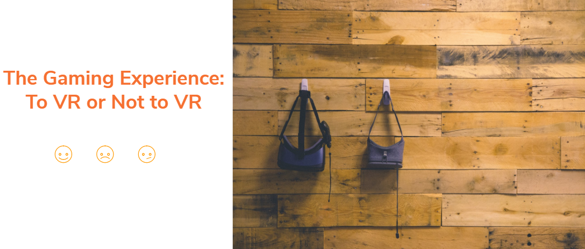

Video Game User Experience: To VR, or Not to VR?

Publication: 2018 IEEE Games, Entertainment, Media Conference (GEM)
Go to Publication: VR Gaming
Abstract
Virtual reality (VR) has become an alternative medium for entertainment purposes, ranging from watching a movie to playing video games. Given the increasing use of VR for video gaming, the current study investigated whether VR gaming might affect the video gaming user experience (UX). We compared three different gaming platforms, namely desktop computer, Oculus Rift, and HTC Vive, in terms of gaming UX satisfaction. A total of 48 participants were randomly assigned to one of the three gaming platforms. Participants played a first-person shooter video game for ten minutes and provided game UX satisfaction ratings. Results revealed no statistically significant differences across the three platforms in video game UX satisfaction levels. Participants, however, rated desktop gaming as significantly more usable, when compared to the two VR conditions. In addition, sense of presence was a strong predictor of game UX satisfaction. Taken together, these results indicate that VR gaming may not always be a better alternative to traditional desktop gaming in terms of video game UX satisfaction, while at the same time providing further support for the putative role sense of presence plays in game satisfaction.